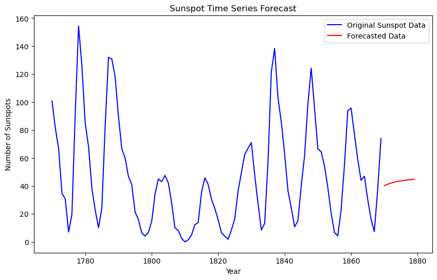
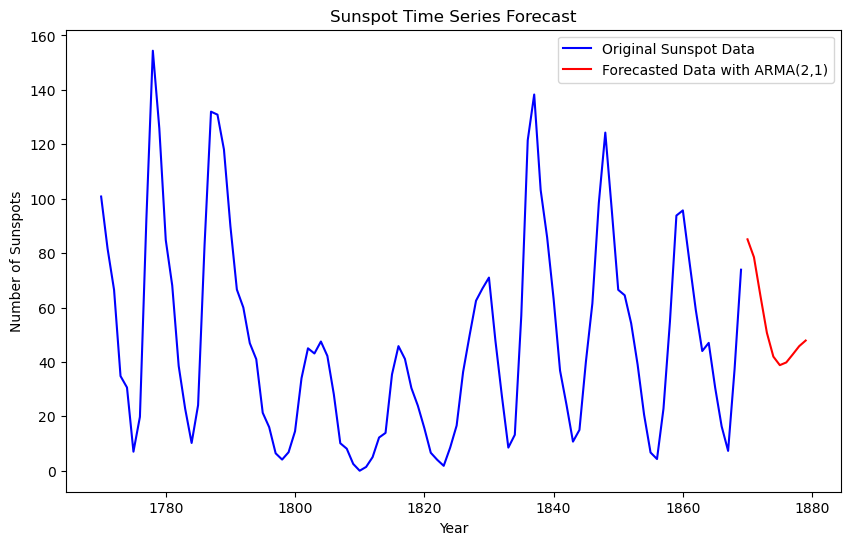

import pymc as pm
import numpy as np
import arviz as az
import pandas as pd
from pytensor.tensor.subtensor import set_subtensor
import pytensor.tensor as pt
import matplotlib.pyplot as plt
7. Prediction of Time Series*#
Adapted from Unit 10: sunspots.odc.
Data can be found here.
Problem statement#
Sunspot numbers observed each year from 1770 to 1869.
BUGS Book Page 258.
y = np.loadtxt("../data/sunspots.txt")
y
array([100.8, 81.6, 66.5, 34.8, 30.6, 7. , 19.8, 92.5, 154.4,
125.9, 84.8, 68.1, 38.5, 22.8, 10.2, 24.1, 82.9, 132. ,
130.9, 118.1, 89.9, 66.6, 60. , 46.9, 41. , 21.3, 16. ,
6.4, 4.1, 6.8, 14.5, 34. , 45. , 43.1, 47.5, 42.2,
28.1, 10.1, 8.1, 2.5, 0. , 1.4, 5. , 12.2, 13.9,
35.4, 45.8, 41.1, 30.4, 23.9, 15.7, 6.6, 4. , 1.8,
8.5, 16.6, 36.3, 49.7, 62.5, 67. , 71. , 47.8, 27.5,
8.5, 13.2, 56.9, 121.5, 138.3, 103.2, 85.8, 63.2, 36.8,
24.2, 10.7, 15. , 40.1, 61.5, 98.5, 124.3, 95.9, 66.5,
64.5, 54.2, 39. , 20.6, 6.7, 4.3, 22.8, 54.8, 93.8,
95.7, 77.2, 59.1, 44. , 47. , 30.5, 16.3, 7.3, 37.3,
73.9])
t = np.array(range(100))
yr = t + 1770
Model 1#
with pm.Model() as m1:
eps_0 = pm.Normal("eps_0", 0, tau=0.0001)
theta = pm.Normal("theta", 0, tau=0.0001)
c = pm.Normal("c", 0, tau=0.0001)
sigma = pm.Uniform("sigma", 0, 100)
tau = 1 / (sigma**2)
_m = c + theta * pt.roll(y, shift=-1)[:-1]
m = set_subtensor(_m[0], y[0] - eps_0)
_eps = y - m
eps = set_subtensor(_eps[0], eps_0)
pm.Normal("likelihood", mu=m, tau=tau, observed=y[:-1])
trace = pm.sample(3000)
Show code cell output
Auto-assigning NUTS sampler...
Initializing NUTS using jitter+adapt_diag...
Multiprocess sampling (4 chains in 4 jobs)
NUTS: [eps_0, theta, c, sigma]
/Users/aaron/mambaforge/envs/pymc/lib/python3.11/multiprocessing/popen_fork.py:66: RuntimeWarning: os.fork() was called. os.fork() is incompatible with multithreaded code, and JAX is multithreaded, so this will likely lead to a deadlock.
self.pid = os.fork()
/Users/aaron/mambaforge/envs/pymc/lib/python3.11/multiprocessing/popen_fork.py:66: RuntimeWarning: os.fork() was called. os.fork() is incompatible with multithreaded code, and JAX is multithreaded, so this will likely lead to a deadlock.
self.pid = os.fork()
Sampling 4 chains for 1_000 tune and 3_000 draw iterations (4_000 + 12_000 draws total) took 3 seconds.
az.summary(trace)
| mean | sd | hdi_3% | hdi_97% | mcse_mean | mcse_sd | ess_bulk | ess_tail | r_hat | |
|---|---|---|---|---|---|---|---|---|---|
| eps_0 | -0.014 | 21.310 | -40.006 | 39.924 | 0.209 | 0.201 | 10412.0 | 7932.0 | 1.0 |
| theta | 0.817 | 0.060 | 0.710 | 0.937 | 0.001 | 0.000 | 8147.0 | 7845.0 | 1.0 |
| c | 8.501 | 3.579 | 1.758 | 15.201 | 0.040 | 0.029 | 8081.0 | 7731.0 | 1.0 |
| sigma | 21.953 | 1.595 | 19.064 | 24.962 | 0.015 | 0.011 | 10940.0 | 8973.0 | 1.0 |
Model 1 using built in AR(1)#
with pm.Model() as m1_ar:
rho = pm.Normal(
"rho", 0, tau=0.0001, shape=2
) # shape of rho determines AR order
sigma = pm.Uniform("sigma", 0, 100)
# constant=True means rho[0] is the constant term (c from BUGS model)
pm.AR("likelihood", rho=rho, sigma=sigma, constant=True, observed=y)
trace = pm.sample(3000)
Show code cell output
/Users/aaron/mambaforge/envs/pymc/lib/python3.11/site-packages/pymc/distributions/timeseries.py:621: UserWarning: Initial distribution not specified, defaulting to `Normal.dist(0, 100, shape=...)`. You can specify an init_dist manually to suppress this warning.
warnings.warn(
Auto-assigning NUTS sampler...
Initializing NUTS using jitter+adapt_diag...
Multiprocess sampling (4 chains in 4 jobs)
NUTS: [rho, sigma]
/Users/aaron/mambaforge/envs/pymc/lib/python3.11/multiprocessing/popen_fork.py:66: RuntimeWarning: os.fork() was called. os.fork() is incompatible with multithreaded code, and JAX is multithreaded, so this will likely lead to a deadlock.
self.pid = os.fork()
/Users/aaron/mambaforge/envs/pymc/lib/python3.11/multiprocessing/popen_fork.py:66: RuntimeWarning: os.fork() was called. os.fork() is incompatible with multithreaded code, and JAX is multithreaded, so this will likely lead to a deadlock.
self.pid = os.fork()
Sampling 4 chains for 1_000 tune and 3_000 draw iterations (4_000 + 12_000 draws total) took 2 seconds.
az.summary(trace)
| mean | sd | hdi_3% | hdi_97% | mcse_mean | mcse_sd | ess_bulk | ess_tail | r_hat | |
|---|---|---|---|---|---|---|---|---|---|
| rho[0] | 8.721 | 3.572 | 2.070 | 15.458 | 0.049 | 0.036 | 5346.0 | 5707.0 | 1.0 |
| rho[1] | 0.808 | 0.060 | 0.694 | 0.920 | 0.001 | 0.001 | 5248.0 | 5349.0 | 1.0 |
| sigma | 21.814 | 1.601 | 18.806 | 24.781 | 0.019 | 0.013 | 7213.0 | 7306.0 | 1.0 |
Prediction Step#
We have our model, now we forecast the next 10 years:
# Forecast 10 years ahead
n_fcast = 10
y_fcast = np.zeros(n_fcast + 2)
y_fcast[:2] = y[-2:]
# Extract the mean of the posterior for rho (AR(1) model)
rho_mean = trace.posterior["rho"].mean(axis=(0, 1)).values
# Forecast based on the last observed point for AR(1)
for i in range(1, n_fcast + 2):
y_fcast[i] = rho_mean[0] + rho_mean[1] * y_fcast[i - 1]
y_forecast = y_fcast[2:]
# Extend the year array for the forecast period
t_fcast = np.arange(yr[-1] + 1, yr[-1] + 1 + n_fcast)
# Plot the original time series with the forecast
plt.figure(figsize=(10, 6))
plt.plot(yr, y, label="Original Sunspot Data", color="blue")
plt.plot(t_fcast, y_forecast, label="Forecasted Data", color="red")
plt.xlabel("Year")
plt.ylabel("Number of Sunspots")
plt.legend()
plt.title("Sunspot Time Series Forecast")
plt.show()

Model 2: ARMA(2,1)#
Because the forecast only utilizes the last value to forecast, we will enhance the model by adding another AR term, as well as a Moving Average (MA) term.
We use pymc_experimental.BayesianSARIMA to achieve this. As of 9/16/2024, this functionality is still in the experimentation repo, however it allows for a greatly reduced codebase. Coding an ARMA(2,1) method from scratch is lengthy. See here for documentation.
import pymc_experimental.statespace as pmss
import pymc as pm
import pymc.sampling_jax as pjax
# As BayesianSARIMA does not include an intercept term,
# we can force it by centering the data
y_mean = y.mean()
y_centered = y - y_mean
y2 = y_centered.reshape(-1, 1)
# ARMA(2,1) model
ss_mod = pmss.BayesianSARIMA(order=(2, 0, 1), verbose=True)
with pm.Model(coords=ss_mod.coords) as arma_model:
# Priors
state_sigmas = pm.Uniform(
"sigma_state", 0, 100, dims=ss_mod.param_dims["sigma_state"]
)
ar_params = pm.Normal(
"ar_params", 0, tau=0.0001, dims=ss_mod.param_dims["ar_params"]
)
ma_params = pm.Normal(
"ma_params", 0, tau=0.0001, dims=ss_mod.param_dims["ma_params"]
)
# Build Statespace Model
ss_mod.build_statespace_graph(y2, mode="JAX")
# Inference Data
trace = pm.sample(nuts_sampler="numpyro", target_accept=0.9)
Show code cell output
The following parameters should be assigned priors inside a PyMC model block:
ar_params -- shape: (2,), constraints: None, dims: ('ar_lag',)
ma_params -- shape: (1,), constraints: None, dims: ('ma_lag',)
sigma_state -- shape: None, constraints: Positive, dims: ()
/Users/aaron/mambaforge/envs/pymc/lib/python3.11/site-packages/pymc_experimental/statespace/utils/data_tools.py:74: UserWarning: No time index found on the supplied data. A simple range index will be automatically generated.
warnings.warn(NO_TIME_INDEX_WARNING)
az.summary(trace)
| mean | sd | hdi_3% | hdi_97% | mcse_mean | mcse_sd | ess_bulk | ess_tail | r_hat | |
|---|---|---|---|---|---|---|---|---|---|
| ar_params[1] | 1.217 | 0.118 | 0.987 | 1.430 | 0.003 | 0.002 | 1364.0 | 1179.0 | 1.0 |
| ar_params[2] | -0.551 | 0.112 | -0.761 | -0.341 | 0.003 | 0.002 | 1373.0 | 1128.0 | 1.0 |
| ma_params[1] | 0.378 | 0.139 | 0.108 | 0.627 | 0.003 | 0.003 | 1557.0 | 1720.0 | 1.0 |
| sigma_state | 15.056 | 1.090 | 13.067 | 17.173 | 0.024 | 0.017 | 2182.0 | 1677.0 | 1.0 |
# Means of AR, MA, and Sigma
ar_mean = trace.posterior["ar_params"].mean(dim=("chain", "draw")).values
ma_mean = trace.posterior["ma_params"].mean(dim=("chain", "draw")).values
sigma_mean = trace.posterior["sigma_state"].mean(dim=("chain", "draw")).values
# Residuals
epsilon_fcast = np.zeros(n_fcast + 2)
epsilon_fcast[:2] = 0
# Forecast 10 periods ahead
n_fcast = 10
y_fcast = np.zeros(n_fcast + 2)
y_fcast[:2] = y_centered[-2:]
for i in range(2, n_fcast + 2):
# Future error term
epsilon_t = 0
y_fcast[i] = (
ar_mean[0] * y_fcast[i - 1]
+ ar_mean[1] * y_fcast[i - 2]
+ ma_mean[0] * epsilon_fcast[i - 1]
+ epsilon_t
)
# Update the error term
epsilon_fcast[i] = epsilon_t
y_forecast = y_fcast[2:] + y_mean # Add the mean back
t_fcast = np.arange(yr[-1] + 1, yr[-1] + 1 + n_fcast)
# Plotting
plt.figure(figsize=(10, 6))
plt.plot(yr, y, label="Original Sunspot Data", color="blue")
plt.plot(
t_fcast, y_forecast, label="Forecasted Data with ARMA(2,1)", color="red"
)
plt.xlabel("Year")
plt.ylabel("Number of Sunspots")
plt.legend()
plt.title("Sunspot Time Series Forecast")
plt.show()

Written by Taylor Bosier and Aaron Reding.
%load_ext watermark
%watermark -n -u -v -iv -p pytensor
The watermark extension is already loaded. To reload it, use:
%reload_ext watermark
Last updated: Wed Sep 18 2024
Python implementation: CPython
Python version : 3.11.8
IPython version : 8.22.2
pytensor: 2.25.4
matplotlib : 3.8.3
pytensor : 2.25.4
pandas : 2.2.1
arviz : 0.17.1
pymc_experimental: 0.1.2
pymc : 5.16.2
numpy : 1.26.4